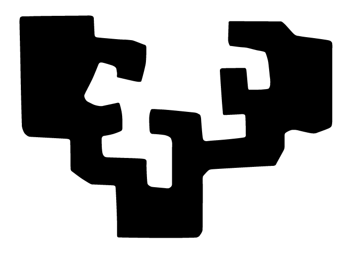
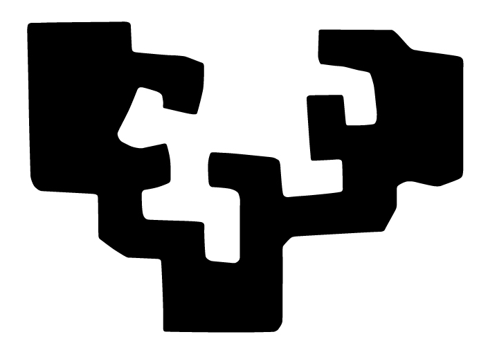

UPV/EHU-ren arabera, Gradu Amaierako Lana proiektu, azterlan edo analisi bat da, 12 ECTS kreditu dituena eta graduaren amaieran egiten dena. Helburua da ikasketetan eskuratutako edukiak, gaitasunak eta trebetasunak garatzea eta sakontzea da.
Irakasle batek zure aurrerapenak orientatu eta gainbegiratuko ditu. Lana amaitzean, memoria bat entregatu beharko duzu, eta zure lana ebaluatuko duen epaimahai baten aurrean aurkeztu.
Lanaren izen ematea graduaren 168 kreditu (oinarrizko 60, nahitaezko 66 eta hautazko 42) gainditu ondoren egin ahal izango da eta graduak aipamena badu hautatutako aipamenaren edo espezialitatearen barruan egin beharko da. Izena emateko GAUR aplikazioan egin behar da.
GrAL-ari buruzko jarraibideak behar badituzu, bisitatu jarraibideak atala.
Aurreko urteetako memoria ikusi nahi baduzu, memoria atala bisitatu.
Izen-emateari eta gaiei buruzko informazioa gehiago behar baduzu hemen esteka (bakarrik ikasleentzat).